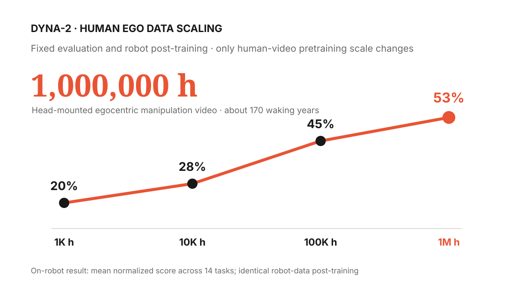
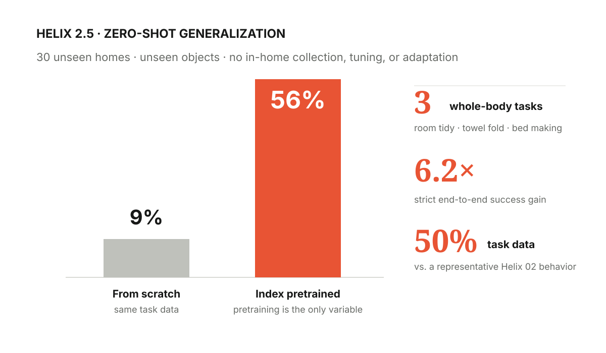
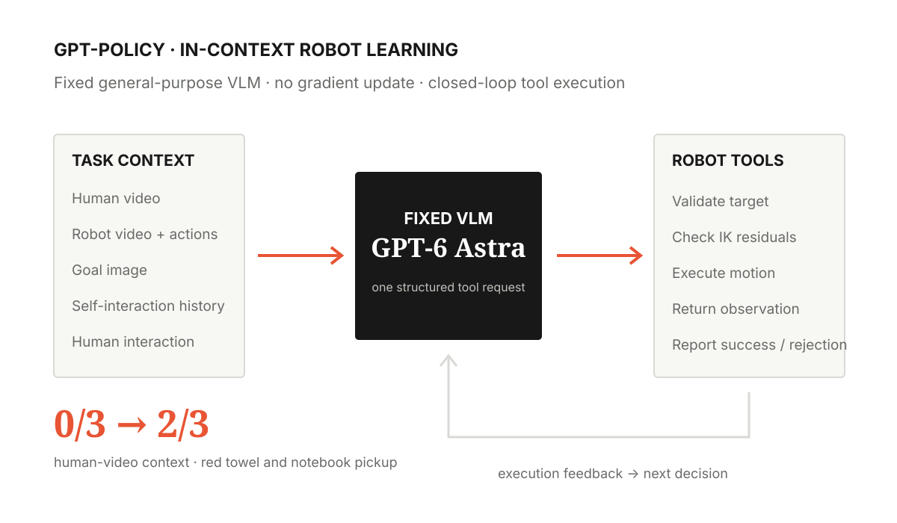

哪些结果真正改变了我们对具身数据规模、模型能力与泛化边界的判断？
这份笔记不按公司罗列新闻，而按它证明了什么归档。每条记录优先保留数据规模、评测设置、核心结果、成立边界与我的判断，便于随着新结果出现持续修订。
数据量
Dyna-2：百万小时 Ego 数据出现 Human-to-Robot Scaling
Dyna-2 是基于视频扩散骨干和 Flow Matching 训练的 World-Action Model。其预训练数据主要是头戴式、第一视角的人类日常双手操作视频，规模超过 100 万小时；通过 3D hand pose 得到 wrist trajectory 与 grasp signal 作为伪动作监督，并构造 1K、10K、100K、1M 小时的嵌套数据档位。模型预训练阶段不使用机器人轨迹，也没有专门做 human–robot 视觉或运动学对齐[1]。

关键结果。在未参与预训练的机器人数据上，离线动作预测指标随人类视频规模单调改善，且 10K→100K 小时附近出现明显拐点。进一步固定每项任务的机器人后训练数据与训练方案，在 14 项、3 类机器人本体的盲测中，平均归一化实机得分随预训练规模从 20%→28%→45%→53% 上升；1M 小时模型在 14 项任务中的 9 项最好。瓶盖旋拧只用了约 10 分钟机器人示范，其成功率仍随人类预训练规模提升至 50%；锁孔转钥匙则直到 1M 小时档才达到 90% 成功率[1]。
它证明了什么。这项工作的价值不是单纯刷新数据量，而是在控制变量下提供了较强证据：大规模人类第一视角操作视频能够形成跨本体迁移的 scaling law，并最终反映到机器人后训练与实机性能。消融还表明，未来视频预测是关键——action-only 方案没有稳定随规模改善；固定动作标注数据后，只增加 video-only 数据仍能提升未见机器人数据上的泛化。因此，更准确的结论是具备世界动态预测目标的大规模 Ego 视频预训练，可以成为机器人策略的新 scaling axis，而不是“只要堆任意人类视频就会自动得到机器人能力”。
边界。实机任务仍使用少量任务相关机器人数据进行后训练；离线 cross-embodiment scaling 也不等同于完全 zero-shot 控制。报告来自公司自身，任务、数据与模型尚未完整开放，第三方复现仍然缺失。
泛化性能
Helix 2.5：Index 预训练支撑 30 个家庭的 Zero-shot 泛化
Helix 2.5 先在 Figure 的人类行为数据集 Index 上从随机初始化预训练，再分别适配整理客厅、折毛巾和铺床三类全身任务。Index 通过面向全球用户的数据采集 App 获得真实人类活动视频；Figure 披露其上线四个月后已覆盖 108 个国家、44,000 余名周活跃采集者与 1,600 万段视频，并通过过滤、反作弊、去重、重平衡和分层文本标注形成训练数据[2]。

评测设置。30 个湾区家庭、室内布局和被操作物体均未出现在任务数据中；到达评测家庭后不采集数据、不微调、不适应，也不使用评测 rollout 选择 checkpoint。三个任务分别要求完成全部物体整理、全部毛巾折叠入篮或完整铺床，不给部分分；同一任务使用同一个固定 checkpoint 覆盖全部家庭[3]。
关键结果。在架构、优化、超参数、任务数据和评测全部固定时，从头训练策略的严格端到端成功率为 9%，Index 预训练策略达到 56%，提升超过 6 倍。相较一个代表性的 Helix 02 行为，Helix 2.5 用一半任务特定数据匹配其成功率，同时把部署范围扩展至 30 个未见家庭。随着 Index 预训练数据扩大 8 倍，下游机器人动作预测损失平滑下降，最大档结果可由较小档实验预估，报告的预测误差为全区间变化量的 0.54%[3]。
它证明了什么。这比“在训练房间里完成长任务”向前走了一步：广泛的人类 Ego 数据预训练显著提高了全身 humanoid policy 在未见家庭、布局和物体上的迁移能力，而且这种收益是在严格控制任务数据后测得的。它初步支持“广泛预训练一次、用少量机器人数据定义行为、部署时跨环境泛化”的路线。
边界。Zero-shot 指评测环境和物体，而不是任务本身：三类行为仍使用了其他环境收集的 task-specification data 做适配。56% 也说明家庭级全身泛化远未解决；目前只有三类任务、单一公司系统和官方盲测，尚不能外推到任意家庭任务或跨机器人本体。
部署时适应
GPT-Policy：固定通用 VLM 从上下文中获得机器人行为
GPT-Policy 将固定的通用 VLM 连接到一组受约束的机器人 Tool：Context Compiler 把任务指令、当前多视角观测、机器人状态和任务参考组织成图文输入，VLM 每轮只产生一个结构化工具请求；执行适配器负责目标解析、轨迹采样、逆运动学残差检查和动作执行，再将新观测与执行或拒绝反馈返回下一轮。模型参数在任务过程中保持不变，适应发生在上下文和闭环决策中，而不是权重更新[4]。

关键结果。论文在两种真机平台上评估 10 个任务，每个条件仅做 3 次试验。对于 Pick Red Towel 和 Pick Up Notebook，在没有参考视频时均为 0/3，加入一段不含机器人动作标签的人类视频后均达到 2/3；决策次数分别从 96.3 降至 76.7、从 94.0 降至 66.7，平均执行时间从 24.6 分钟降至 18.9 和 16.1 分钟。对于更依赖接触细节的任务，机器人视频提供程序信息，而对齐的动作参考继续提供增益：开瓶盖从无示范的 0/3、视频的 2/3 提升至视频加动作的 3/3；拔出并重新插入插头则为 0/3、0/3 和 2/3[4]。
它证明了什么。至少在小规模真机实验中，通用 VLM 已能把部署时提供的程序性视觉上下文转化为新的工具调用序列：人类视频即使没有机器人动作标签，也能改变策略并带来此前未成功任务的完成案例；当任务涉及精细接触时，跨本体视觉过程不够，机器人动作参考仍然重要。它提供了一条不同于 VLA 参数训练的路线：让通用模型承担低频理解、规划、观察和恢复，把连续运动交给可验证的工具与控制器。
边界。这是 test-time / in-context adaptation，不是跨任务持久保存的参数学习，也不能据此声称形成了 Robo RSI。每个条件只有 3 次试验，结果的统计稳定性有限；单任务需要约 24–96 次 VLM 决策和 5–25 分钟，离实时低层控制仍很远。受约束 Tool 内部承担了轨迹生成和 IK 校验，而论文也观察到双臂碰撞，因此“VLM 知道做什么”与“机器人安全、稳定地执行”仍是两层问题。
参考文献
- Dyna Robotics, Dyna-2: A 1-Million-Hour Scaling Law for World-Action Models，2026-08。
- Figure, Introducing Index: Building The World’s Largest and Most Diverse Physical Dataset，2026-08-25。
- Figure, Helix 2.5: Zero-Shot 30-Home Generalization，2026-09-17。
- Cheng et al., In-Context Robot Learning with VLM Agents，2026-09-16。项目页；代码。